Empire Stone × Empire Granite — QA
Golden Path — FG Countertop (Slab=lot) (ชุดที่ 3 จาก 3)
เรื่องราวของ FG แบบ Countertop (ท็อปครัวคิดเป็น ตร.ม.) ตั้งแต่ใบสั่งขายพร้อมรายชิ้นและงานแปรรูป → ใบสั่งผลิตที่ระบบเลือก Slab ให้ → ย้ายไปสถานีผลิต → บันทึกชิ้นที่ตัดได้และเศษ → ปิดงาน → เศษกลับเข้าสต็อก → ส่งของ → ออกใบแจ้งหนี้ — ใช้ Slab จากชุดที่ 2 · ชุดสุดท้ายของ 3 ชุด · รันจริงบน eg-tst 5 ต.ค. 2026
17Test Case ทั้งหมด
4หมวด
15High Priority
2Medium Priority
0Low Priority
F1. ใบสั่งขาย Countertop (ท็อปครัว)
เปิดใบสั่งขาย → ใส่รายการชิ้นงานและงานแปรรูป → ตรวจราคา → Confirm · 5 test cases
| TC ID | Scenario | Precondition | Steps | ข้อมูลตัวอย่าง | Expected Result | Priority | ภาพหน้าจอ |
|---|---|---|---|---|---|---|---|
| TC-GP-FG-01 | สร้างใบสั่งขาย แล้วเลือกสินค้า Countertop Countertop คิดเป็นตารางเมตร (m²) ตามชิ้นงานที่ลูกค้าสั่ง ไม่ใช่เป็นแผ่น — ตอนเลือกสินค้า จำนวนจะขึ้น 1.00 m² ไว้ก่อน แล้วถูกแทนที่ด้วยพื้นที่รวมของชิ้นงานในขั้นถัดไป |
มีลูกค้า (Demo Hotel Customer) และสินค้า Countertop ที่ผูกกับวัสดุแล้ว (GP Block Marble ราคา 12,000 ต่อ m²) |
|
Customer = Demo Hotel Customer · Product = GP Block Marble | ใบเสนอราคาใหม่ (ตัวอย่างจริง S00178) มีบรรทัดสินค้า GP Block Marble หน่วย m² ราคา 12,000.00 ต่อหน่วย และมีไอคอนรายการชิ้นงานบนบรรทัด | High | 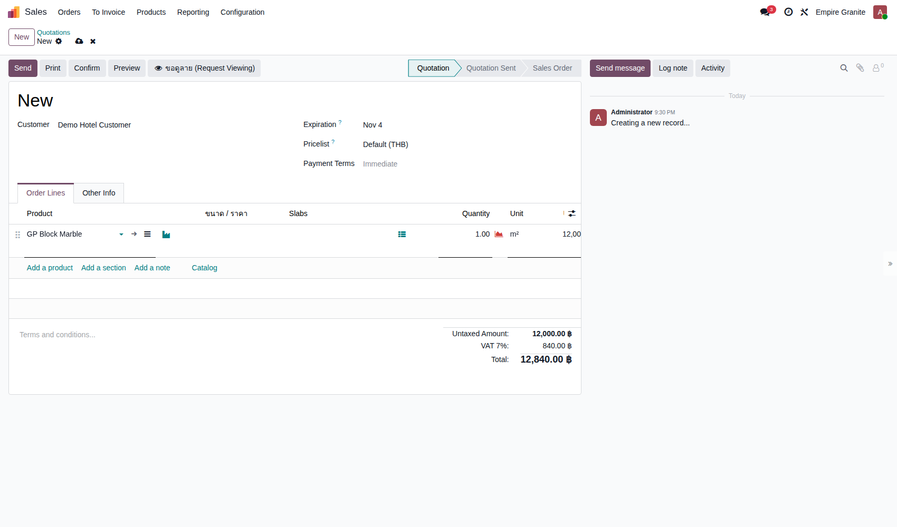 |
| TC-GP-FG-02 | ใส่รายการชิ้นงาน (กว้าง × ยาว ของแต่ละชิ้น) | ทำ TC-GP-FG-01 เสร็จแล้ว และกด Save แล้ว |
|
A ท็อปครัว 2.40 × 0.65 · B เกาะกลาง 1.20 × 0.60 · C ท็อปอ่างล้างจาน 2.00 × 0.60 (ชิ้นละ 1) | ตารางรายชิ้นแสดง 3 ชิ้น พื้นที่ 1.56 + 0.72 + 1.20 = 3.48 ตร.ม. และจำนวนในใบสั่งขายเปลี่ยนเป็น 3.48 m² ตามพื้นที่จริงอัตโนมัติ | High | 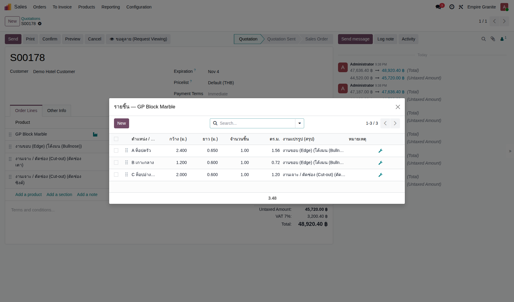 |
| TC-GP-FG-03 | เพิ่มงานแปรรูป (ขอบ / เจาะช่อง) ให้แต่ละชิ้น | ทำ TC-GP-FG-02 เสร็จแล้ว |
|
A: ขอบโค้งมนด้านกว้าง 1 (2.40 ม.) + ตัดช่องเตา · B: ขอบโค้งมนด้านกว้าง 1 (1.20 ม.) · C: ตัดช่องซิงค์ | ระบบคำนวณความยาวขอบให้เองจากด้านที่ติ๊ก (A = 2.400, B = 1.200) และงานเจาะนับเป็นจุด (1.000) — ราคาตามชนิดงานแต่ละแบบ | High | 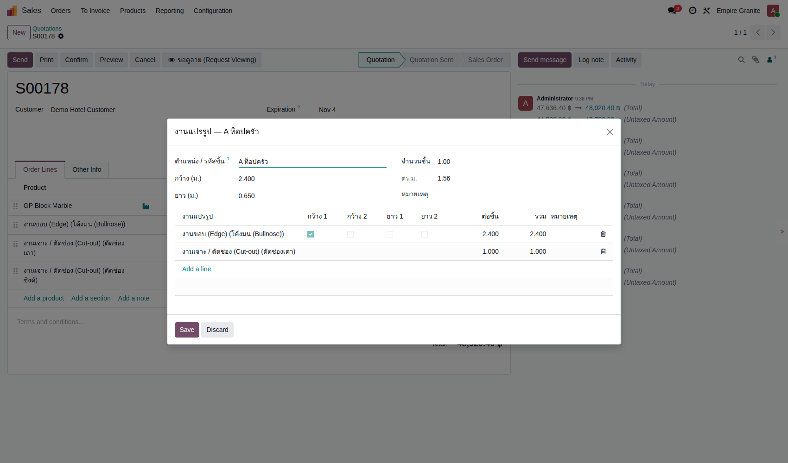 |
| TC-GP-FG-04 | ตรวจใบเสนอราคา — งานแปรรูปกลายเป็นบรรทัดบริการให้เอง | ทำ TC-GP-FG-03 เสร็จแล้ว |
|
- | ใต้บรรทัดหิน 3.48 m² = 41,760.00 มีบรรทัดบริการเพิ่มให้เอง: งานขอบ โค้งมน 3.60 ม. @ 350 = 1,260.00 · งานเจาะ (ช่องเตา) 1 จุด = 1,500.00 · งานเจาะ (ช่องซิงค์) 1 จุด = 1,200.00 — รวมก่อน VAT 45,720.00 + VAT 7% = 48,920.40 บาท | High | 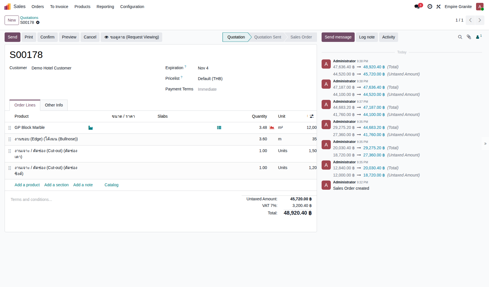 |
| TC-GP-FG-05 | กด Confirm ยืนยันใบสั่งขาย | ทำ TC-GP-FG-04 เสร็จแล้ว |
|
- | ใบเสนอราคาเปลี่ยนเป็น Sales Order · มีสมาร์ทปุ่มใหม่ "Delivery 1" และ "FG Production 1" ที่ด้านบน (ระบบสร้างใบสั่งผลิตฉบับร่างให้เองทันที) | High | 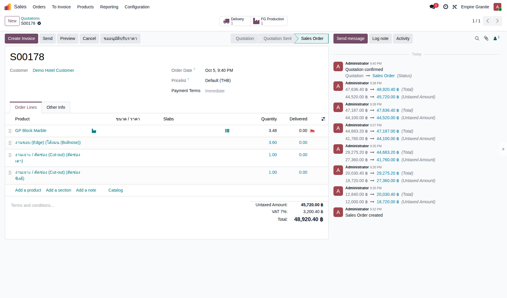 |
F2. ผลิต Countertop (FG Production)
เปิดใบสั่งผลิต → ระบบเลือก Slab ให้ → ย้ายไปสถานีผลิต → Confirm → บันทึกชิ้นที่ตัดได้ + เศษ → Complete · 6 test cases
| TC ID | Scenario | Precondition | Steps | ข้อมูลตัวอย่าง | Expected Result | Priority | ภาพหน้าจอ |
|---|---|---|---|---|---|---|---|
| TC-GP-FG-06 | เปิดใบสั่งผลิต FG — ระบบเลือก Slab ให้ครบพื้นที่ แถบเตือนสีส้มและแท็บ Components ยังแสดงแผ่นมาตรฐานตามสูตร (Honed 3 cm, Not Available) ไว้ก่อน — จะถูกแทนที่ด้วยแผ่นที่เลือกจริงตอน Confirm เป็นแค่ข้อความ ไม่กระทบการทำงาน |
ทำ TC-GP-FG-05 เสร็จแล้ว |
|
- | ใบสั่งผลิต EG01/STFG/00034 (Draft) — พื้นที่งาน 3.48 ตร.ม. · ต้องใช้รวมเผื่อเสีย 3.83 ตร.ม. (เผื่อเสีย 10% ตามที่ตั้งไว้ในบริษัท) · ระบบเลือก Slab ให้เอง 2 แผ่น (BLK-26-0006-3 และ -4 แผ่นละ 3.75 ตร.ม.) รวม 7.50 ตร.ม. พอสำหรับงาน | High | 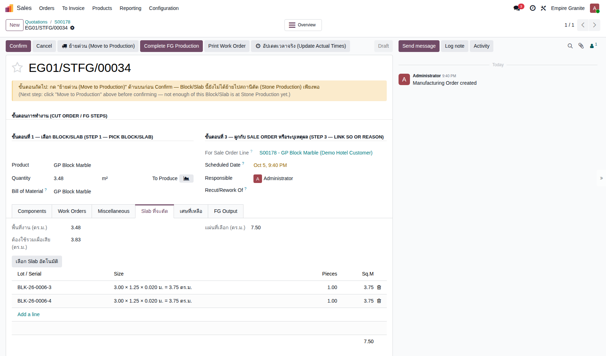 |
| TC-GP-FG-07 | ย้าย Slab ไปสถานีผลิต (ย้ายด่วน) | ทำ TC-GP-FG-06 เสร็จแล้ว |
|
- | ระบบแจ้งเตือนสีเขียว "ย้ายสำเร็จ ย้าย 2 lot ไป Stone Production แล้ว — กด Confirm ได้เลย" (Slab ทั้ง 2 แผ่นออกจาก Stone Available มาอยู่สถานีผลิต) | High | 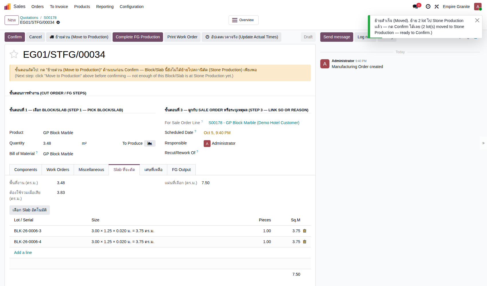 |
| TC-GP-FG-08 | กด Confirm ใบสั่งผลิต แท็บ Work Orders มี 4 ขั้นตอน (ตัดตามแบบ → ทำขอบ → เจาะ/ตัดช่อง → ตรวจก่อนส่ง) แต่ไม่ต้องกด Start ทีละขั้นก็ปิดงานได้ ในชุดนี้ข้ามส่วนจับเวลา — ขั้นตอนเหล่านี้ไม่ได้ทดสอบ · ช่อง Component Status ยังขึ้น Not Available แม้ย้าย Slab มาแล้ว แต่ไม่ขวางการ Complete |
ทำ TC-GP-FG-07 เสร็จแล้ว |
|
- | ใบสั่งผลิตเป็น Confirmed · ข้อความนำทางสีฟ้าบอกขั้นถัดไป (กรอก FG Output แล้วกด Complete FG Production) | High | 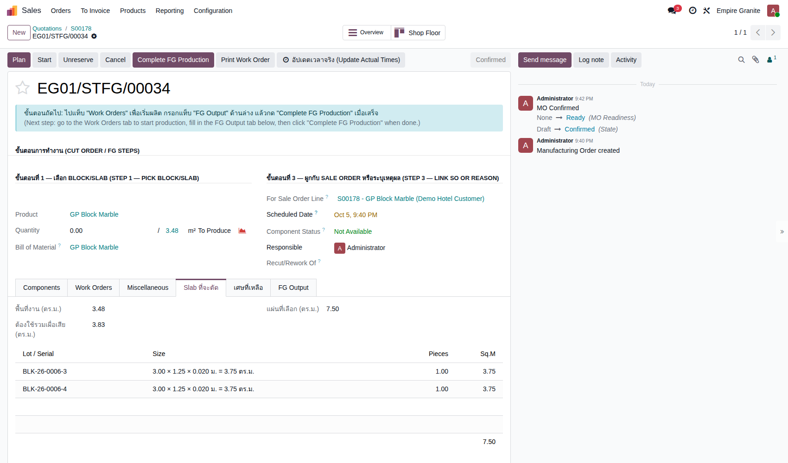 |
| TC-GP-FG-09 | ตรวจรายการชิ้นที่ตัดได้จริง (FG Output) รายการนี้ถูกเติมให้จากชิ้นงานในใบสั่งขาย โรงงานแก้เฉพาะชิ้นที่ตัดออกมาไม่ตรง และความหนา 0.00 ไม่ต้องกรอก — ระบบใช้ความหนาของ Slab ที่ตัด (0.02 ม.) ให้เอง |
ทำ TC-GP-FG-08 เสร็จแล้ว |
|
ตัดได้ตรงตามสั่ง จึงไม่ต้องแก้ | มี 3 แถวตรงกับชิ้น A (2.40 × 0.65), B (1.20 × 0.60), C (2.00 × 0.60) พร้อมหมายเหตุงานแปรรูปของแต่ละชิ้น (เช่น งานขอบ × 2.4, ช่องเตา × 1) ให้ช่างอ่านตอนตัด | High | 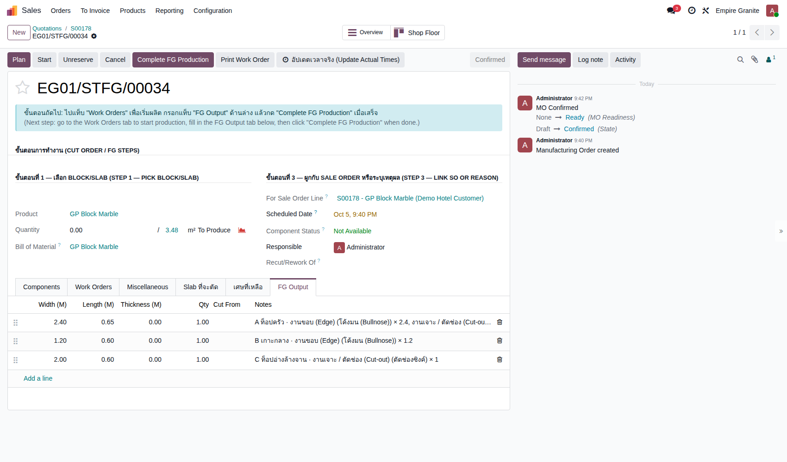 |
| TC-GP-FG-10 | บันทึกเศษหินที่เหลือจากการตัด | ทำ TC-GP-FG-09 เสร็จแล้ว |
|
เศษจาก -3: 1.20 × 1.20 (1 ชิ้น) · เศษจาก -4: 2.00 × 1.25 (1 ชิ้น) | ตารางเศษแสดง 2 แถว พื้นที่ 1.44 และ 2.50 ตร.ม. รวม 3.94 ตร.ม. — คอลัมน์ต้นทุนยังเป็น 0.00 จนกว่าจะปิดงาน | Medium | 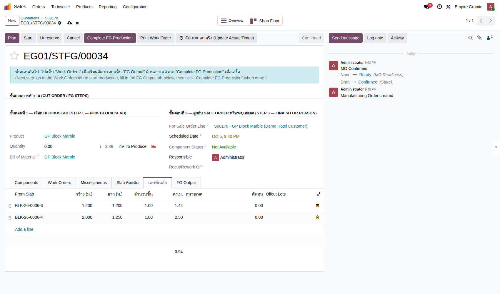 |
| TC-GP-FG-11 | กด Complete FG Production ปิดงานผลิต หลังปิดงาน แท็บ Components ยังมีแถวแผ่นมาตรฐานตามสูตร (Honed 3 cm) ที่ Consumed 0.00 คู่กับแถวแผ่นจริงที่ใช้ (Polished 2 cm, Consumed 2.00) — เป็นแค่การแสดงผล ไม่กระทบสต็อก |
ทำ TC-GP-FG-10 เสร็จแล้ว |
|
- | แจ้งเตือนสีเขียว "Complete FG Production สำเร็จ EG01/STFG/00034 ผลิตสำเร็จ 3.48 หน่วย" · ใบสั่งผลิตขึ้น Done · Quantity 3.48 / 3.48 · Slab 2 แผ่นถูกใช้ไป (Consumed 2.00) · ได้ FG 3 Lot ตามขนาดชิ้น (FG-EG01/STFG/00034-01 ถึง -03) เข้าสต็อกคลัง และต้นทุนรวม 1,153.44 บาท (331.45 ต่อ m²) = ค่า Slab 2,430.00 หักส่วนของเศษ 1,276.56 | High | 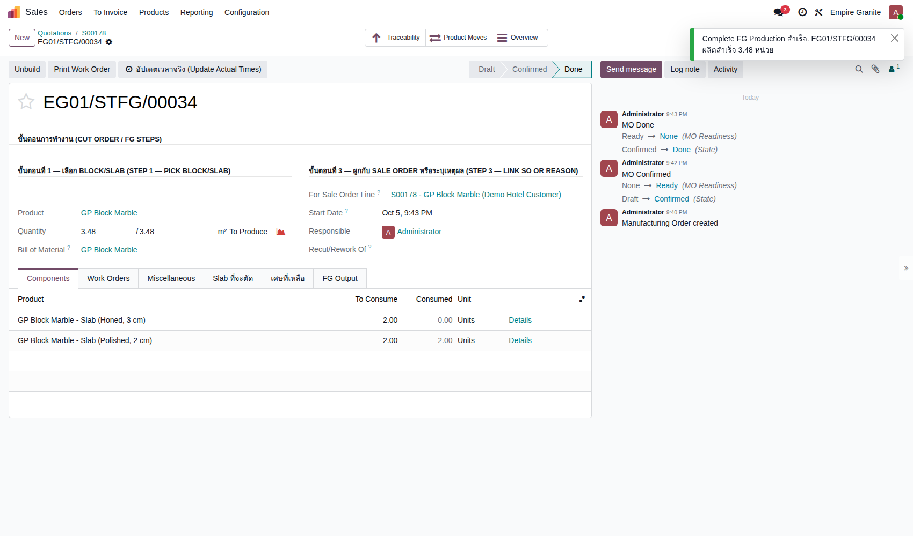 |
F3. เศษหินกลับเข้าสต็อก
เศษที่เหลือกลายเป็น Lot ใหม่รอตรวจ → ตรวจแล้วนำกลับไปขาย · 2 test cases
| TC ID | Scenario | Precondition | Steps | ข้อมูลตัวอย่าง | Expected Result | Priority | ภาพหน้าจอ |
|---|---|---|---|---|---|---|---|
| TC-GP-FG-12 | ตรวจว่าเศษถูกบันทึกเป็น Lot ใหม่ในสถานะ "รอตรวจ" | ทำ TC-GP-FG-11 เสร็จแล้ว |
|
OC-EG01/STFG/00034-01 | เศษแต่ละก้อนเป็น Lot ของตัวเอง ขนาดจริง (1.20 × 1.20 × 0.02 ม. = 1.44 ตร.ม.) · อยู่ที่ Stone Inventory/Returned - Inspect · Status "Returned - Pending Inspection" · ต้นทุน 466.56 บาท (ส่วนแบ่งตามพื้นที่) — ก้อนที่ 2 (2.00 × 1.25) ต้นทุน 810.00 บาท | High | 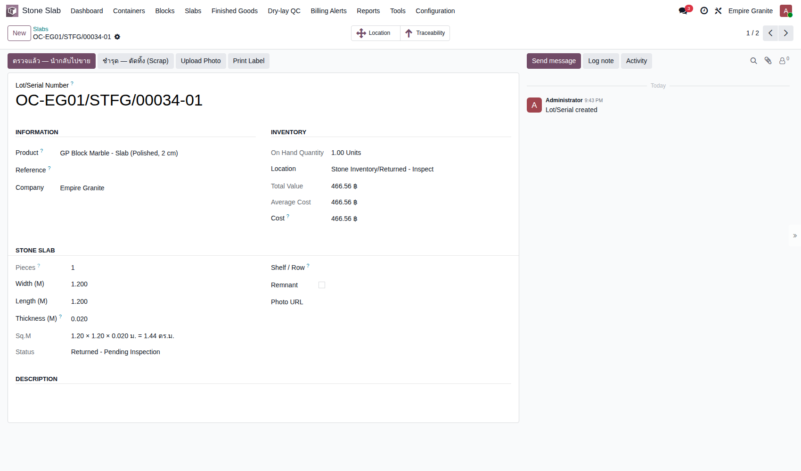 |
| TC-GP-FG-13 | ตรวจเศษแล้วนำกลับไปขายได้ ถ้าเศษแตกหรือใช้ไม่ได้ ให้กด "ชำรุด — ตัดทิ้ง (Scrap)" แทน (ไม่ได้ทดสอบในชุดนี้ เพราะนอก Happy Path) |
ทำ TC-GP-FG-12 เสร็จแล้ว |
|
OC-EG01/STFG/00034-01 และ -02 | สถานะเปลี่ยนเป็น Available · Location เป็น Stone Inventory/Stone Available · ปุ่มตรวจแล้ว/ชำรุดหายไป · ต้นทุนยังเป็น 466.56 และ 810.00 บาทเท่าเดิม — เศษกลับมาขายเป็น Slab ขนาดเล็กได้ | Medium | 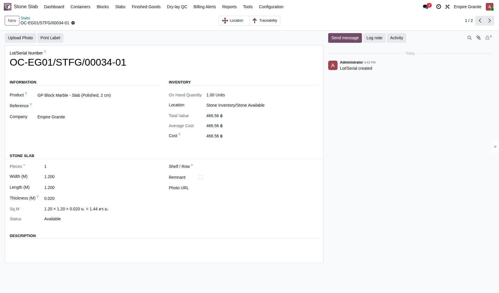 |
F4. ส่งของและเก็บเงิน Countertop
ใบส่งของ → Validate → ใบแจ้งหนี้ → Post · 4 test cases
| TC ID | Scenario | Precondition | Steps | ข้อมูลตัวอย่าง | Expected Result | Priority | ภาพหน้าจอ |
|---|---|---|---|---|---|---|---|
| TC-GP-FG-14 | เปิดใบส่งของ ตรวจว่าระบบจอง FG ถูก Lot | ทำ TC-GP-FG-11 เสร็จแล้ว |
|
- | ใบส่งของ EG01/OUT/00062 สถานะ Ready · Product Availability = Available · Detailed Operations ระบุ Lot ครบ 3 แถว: FG-EG01/STFG/00034-01 (1.56 m²), -02 (0.72 m²), -03 (1.20 m²) รวม 3.48 m² ตรงกับที่สั่ง — ไม่ต้องสแกนหรือเลือก Lot เอง | High | 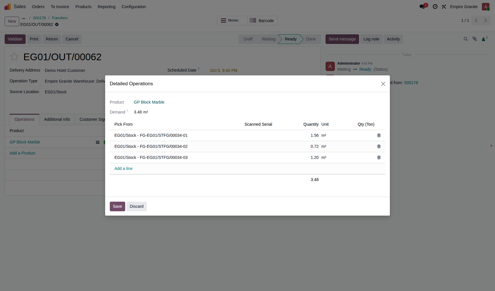 |
| TC-GP-FG-15 | กด Validate ส่งของ | ทำ TC-GP-FG-14 เสร็จแล้ว |
|
- | ใบส่งของขึ้น Done · Quantity 3.48 จาก Demand 3.48 · มี Effective Date · ปุ่ม Traceability ปรากฏ (ย้อนดูได้ว่าสินค้ามาจาก Slab แผ่นไหน) | High | 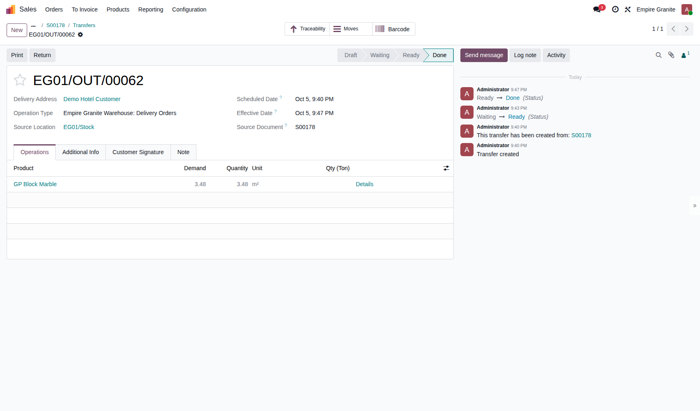 |
| TC-GP-FG-16 | สร้างใบแจ้งหนี้จาก Sales Order | ทำ TC-GP-FG-15 เสร็จแล้ว |
|
Regular invoice | ได้ใบแจ้งหนี้ฉบับร่าง 4 บรรทัดตรงกับ Sales Order: GP Block Marble 3.48 m² = 41,760.00 · งานขอบ 3.60 ม. = 1,260.00 · งานเจาะช่องเตา 1,500.00 · งานเจาะช่องซิงค์ 1,200.00 — รวม 45,720.00 + VAT 3,200.40 = 48,920.40 บาท | High | 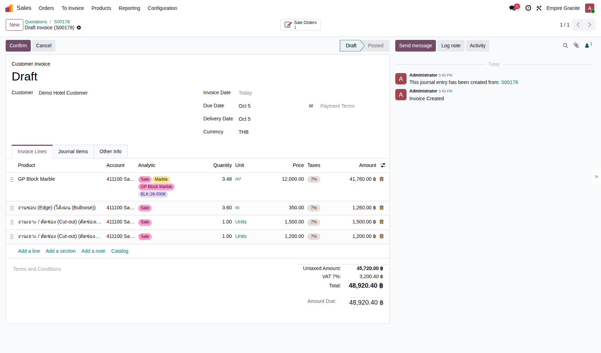 |
| TC-GP-FG-17 | กด Confirm ใบแจ้งหนี้ให้ Posted | ทำ TC-GP-FG-16 เสร็จแล้ว |
|
- | ใบแจ้งหนี้ INV/2026/00006 เป็น Posted · ยอดค้างชำระ 48,920.40 บาท · บรรทัดหินติดแท็ก Analytic (Sale / Marble / GP Block Marble / BLK-26-0006) ทำให้รายงานต้นทุนอ้างอิงกลับไปถึง Block ต้นทางได้ · มีปุ่ม Pay และ Credit Note พร้อมใช้ | High | 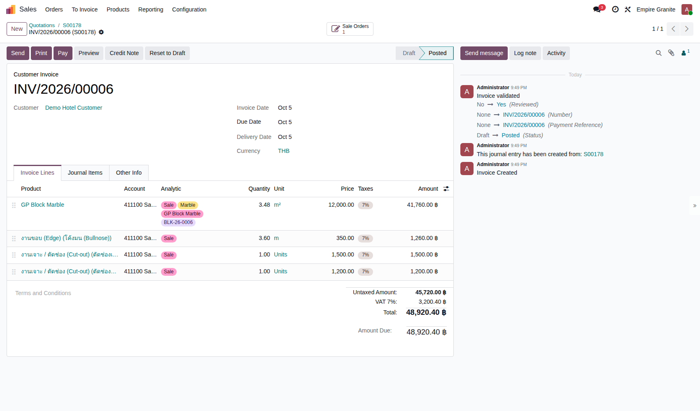 |